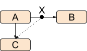
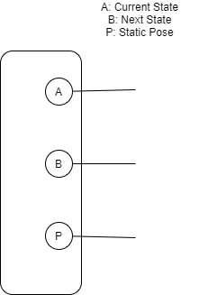
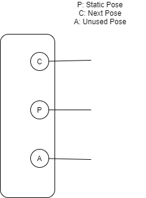

Interrupted transition in Unity
It remains complicated and difficult to handle when it comes to animation transition, both in UE4 and Unity. Since Unity has its own way, not perfect though, to handle animation interruption.
You can see how Unity handle animation interruption by reading this blog. In short:
Internally, the animation system records the pose at the time of the interruption, and will now blend between that static pose (X) and the new destination animation.

Why refactor?
Unity mentioned that instead of a smoother blend between the current and new transitions, a static pose would be much better concerning performance.
But what if we interrupted the transition so that the transition simply go back to the origin souce state? It would be over kill if we transite from a static pose to target state, let alone it is not smooth enough.
In such case, we prefer to simply swap the current and next state, and let the transition continue. Thus a both smoother and performance-friendly transition could be performed.
Digging into interruption transition
Official interruption transition
It is necessary to have some basic idea about what is actually happening deep inside the engine when an interrupted transition takes place.
When a transition takes place
When a transition, let’s say, from state A to state B, takes place. The State Machine Mixer Playable node looks like this:

Where the first input node is the current state, the second input node is the next state. As for the third input node, this is the static pose node, which is zero-weighted when a regular transition takes place.
When the transition is interrupted
When the transition is interrupted and the state machine is about to go to, let’s say, state C. The State Machine Mixer Playable looks like this:

It is easy to tell that final pose it blended by the static pose P and the next state C. And the original transition source state A, is connected to the third input node slot.
When the transition ends
When transition ends, the State Machine Mixer Playable would re-organize its input nodes.
For a normal transition
When a normal transition ends, the State Machine Mixer Playable would swap its first and second nodes. As a result, the next state B would become the current state.
For a interrupted transition
When a interrupted transition ends, the State Machine Mixer Playable would connect the static pose node P to its third node slot, next state C to the first node slot and previous state A to the second node slot like this:

Our goal
Our goal is to simply swap the source and target node, when the transition is interrupted back to the source state again.
That is to say, we want the State Machine Mixer Playable looks like this when we found the state machine is about to interrupt back to self:
How should we refactor?
So here comes the most important part, that what should we do to achieve our goal. Well… to be honest, it is much much more complicated than what we used to suppose. And I am not allowed to give too much detail about it. Here is some important problems that I encounted and they just drove me crazy…
Transition time issue
Because we want the transition to go back, which means that when the interruption begins, we need to set the transition time $t_{new} = 1.0 - t_{old}$.
For example, we interrupt the transition when at 1s:

When the transition begins, the current transition should be 3s:

State normalize time(current play time)
When a new state is started, Unity would reset its normalize time. Interruption to self, however, cannot let it happen.
As a result, we skipped Start State when interruption to self is detected. Moreover, the current playing time of both source and target state should be swapped as well.
Conflict with official interruption transition
Our animators are using official interruption for quite a long time. So Interruption to self is supposed to work well along with official interruption transition.
Consider interruption to self just so happens interrupts the current official interruption, before interruption to self, the State Machine Mixer Playable looks like this:
After interruption to self, the node became:
And this cause crash because Unity would try to evaluate P as a blend tree.
Conflict with Animator.Play() and Animator.Crossfade()
These functions are widely used in our project. And this is called DynamicTransition in Unity.
A dynamic transition is actually a transition that goes to a specific state directly instead of following those transition rules we set up in an Animator Controller. But since aInterruption to self transition skips the Start State of the target state, which is necessary when a dynamic transition is considered Interruption to self.
This conflict must be solved, or else it would cause a crash.
Result